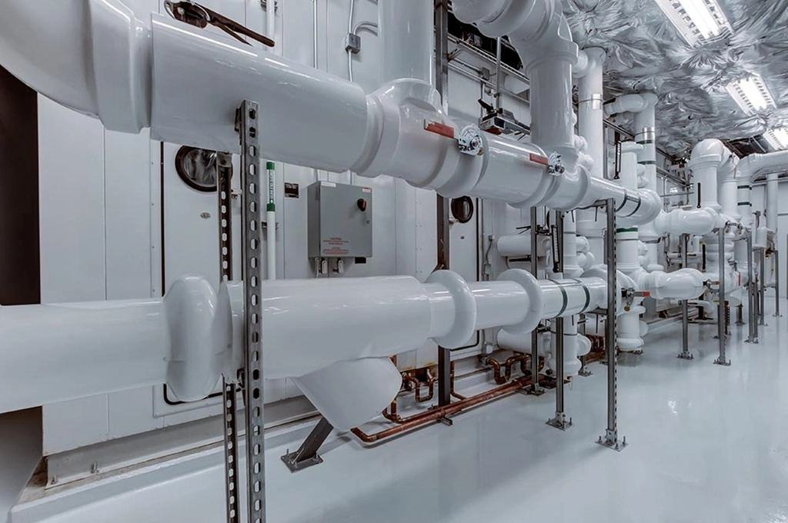
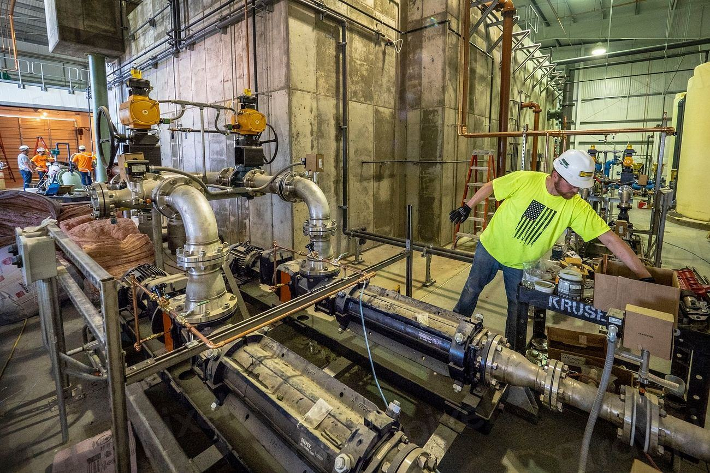
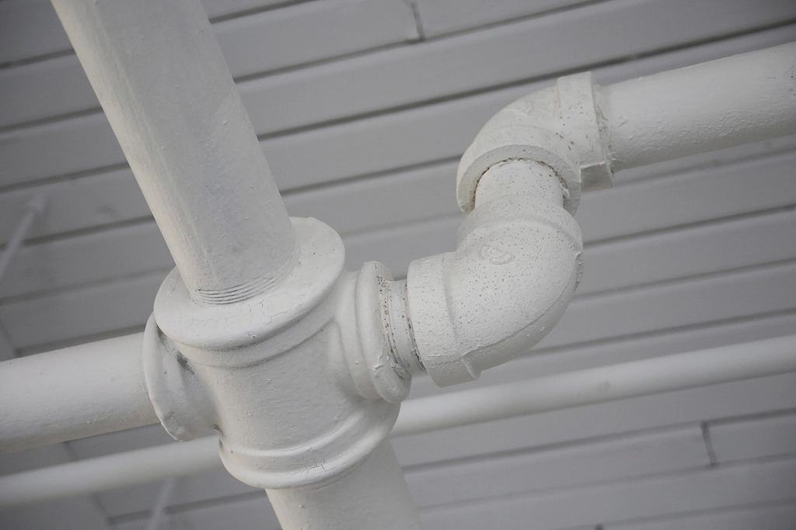

Tjänster
Vi är nio anställda med fyra filmbilar och tar varken provision eller uppdrag för att åtgärda det vi hittar. Alla filmer klassas enligt SS-EN 13508-2 och levereras med en rapport som en annan entreprenör kan räkna på direkt.
Vad vill du veta om rören?

Husköp och överlåtelse
En besiktning av huset tittar sällan in i avloppet. Vi filmar från huvudrensning till anslutning mot kommunens ledning och bedömer skicket i klartext.
Rapporten kommer inom 48 timmar, i tid före kontraktsskrivningen.

Beslutsunderlag för föreningar
Inför ett stambyte eller en relining filmar vi alla stammar och grenrör och klassar varje skada. Föreningen får ett underlag som kan skickas ut till flera entreprenörer för anbud.
Ett vanligt resultat är att stambytet kan skjutas fem till tio år.

Kontroll av utfört arbete
När en entreprenör har relinat ett hus filmar vi resultatet innan föreningen betalar slutfakturan. Vi letar efter veck, dåliga upplåsningar och otäta övergångar.
I ungefär vart femte projekt hittar vi något som entreprenören får åtgärda.

Fastighetsbolag och kommuner
För större bestånd gör vi systematisk inventering av ledningar, med digital karta och en underhållsplan som visar vad som behöver åtgärdas när.
Filmerna lagras i en portal där förvaltaren kan se dem i tio år.
Från spolning till rapport
- 1

Beställning
Du får fast pris direkt i telefon för villor, och efter ritningsgenomgång för flerbostadshus.
- 2

Spolning och film
Vi spolar rent och filmar varje meter, med position och lutning sparad i filmen.
- 3

Bedömning
En ingenjör går igenom filmen och klassar varje skada enligt svensk standard.
- 4

Rapport och portal
Du får en rapport i klartext och tillgång till filmerna i portalen i tio år.
Utbildade bedömare, försäkrade bedömningar
- Klassning SS-EN 13508-2Våra ingenjörer är utbildade i den svenska standarden för bedömning av avloppsledningar.
- ID06Alla tekniker har ID06-kort och registreras i personalliggaren på varje byggarbetsplats.
- Arbete på vägAlla tekniker har utbildning för arbete vid väg när vi filmar i kommunala brunnar.
- KonsultansvarsförsäkringOm vi bedömer fel står försäkringen för följdkostnaden, upp till 5 Mkr per uppdrag.